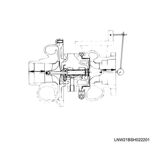
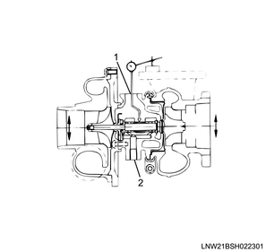
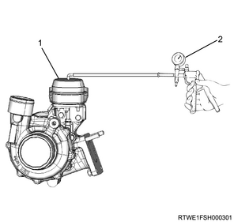

1. Measure play using a dial gauge.
Note
- Measure the play of the wheel in the direction of the wheel axis when a load is applied on the both sides of the compressor wheel.
Load： 12 N { 1.2 kg / 2.7 lb }
Standard： 0.03 to 0.08 mm { 0.0012 to 0.0031 in }
Limit： 0.09 mm { 0.0035 in }

2. Measure the clearance using a dial gauge.
Note
- Measure the clearance between the wheel shaft and the bearing.
Standard： 0.08 to 0.13 mm { 0.0031 to 0.0051 in }
Limit： 0.14 mm { 0.0055 in }

Note
- Inspection of turbocharger actuator operation
3. Install the vacuum pump to the actuator.

4. Operate the vacuum pump.
5. Add negative pressure to the actuator.
Specified pressure： -50.0 kPa { -0.51 kgf/cm2 / -7 psi }
Note
- Confirm that the lever hits the stopper when a vacuum is applied.
- Apply a negative pressure for 30 seconds and check whether the pressure decreases.
- Place the vernier caliper at the control rod end of the actuator.
6. Release negative pressure.
Note
- Gradually release the negative pressure and verify that the control rod moves smoothly.
7. Measure length using a vernier caliper.
Note
- Confirm that the control rod has moved only as much as the standard value when the lever hits the stopper after the vacuum is released.
Standard： 11.4 mm { 0.449 in }